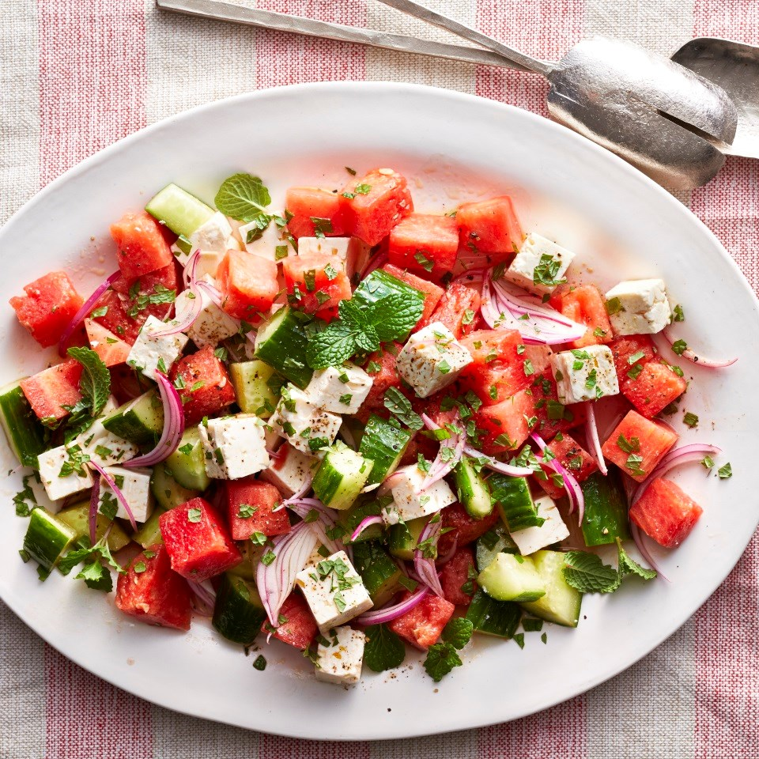

Watermelon Salad

Description
Watermelon salad is a simple, delicious, and refreshing dish that is perfect for summertime! It can be had as a healthy snack, a light meal, or a side dish at a barbecue.
Ingredients
- 3 tbsp lime juice
- 1 cup red onion, sliced lengthwise
- 15 cups watermelon, cubed
- 3 cups English cucumber, cubed
- 8 oz feta cheese, crumbled
- 1/2 cup fresh mint or cilantro, chopped
- salt
- black pepper
Steps
- In a small bowl, pour lime juice over red onions. Set aside to marinate while assembling the other ingredients
- In a large bowl, gently combine the watermelon, cucumber, feta cheese, and herbs. Season with black pepper. Toss salad with the marinated onions.
- Season with salt immediately before serving. Enjoy!